Kodi 21 Omega · HD and 4K · Tested on an NVIDIA Shield
Eleven skins for Kodi
Eleven different answers to one question: what should a library of films, shows and music feel like on a television? Each skin is built around a single idea, whether that is a dial, a sentence, a transit map or a torch in a dark gallery, and carries it through every screen from Home to the player.
Every image on this page is a real screenshot from the TV, not a mockup. (Kodi can't capture video on the Shield, so on the playback screens a frame of the film was added behind the controls.) All eleven install from one Kodi repository and are free to use.
-
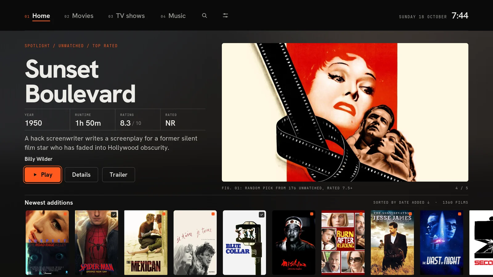
01MajanAn editorial index for your library -
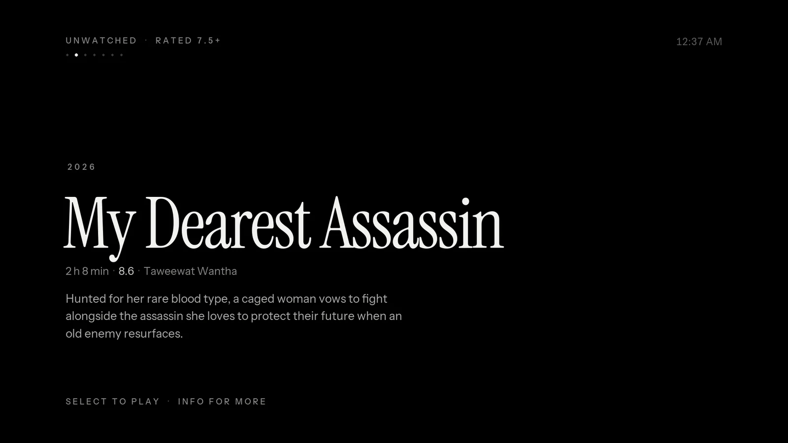
02VoidOne thing at a time -
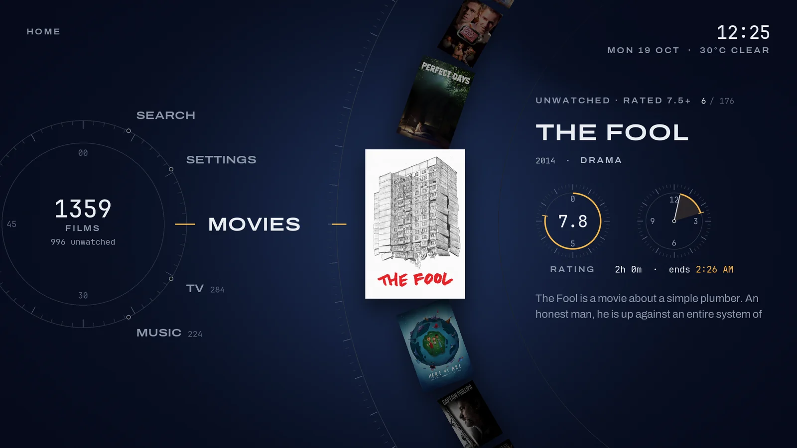
03OrbitBrowse on a dial -
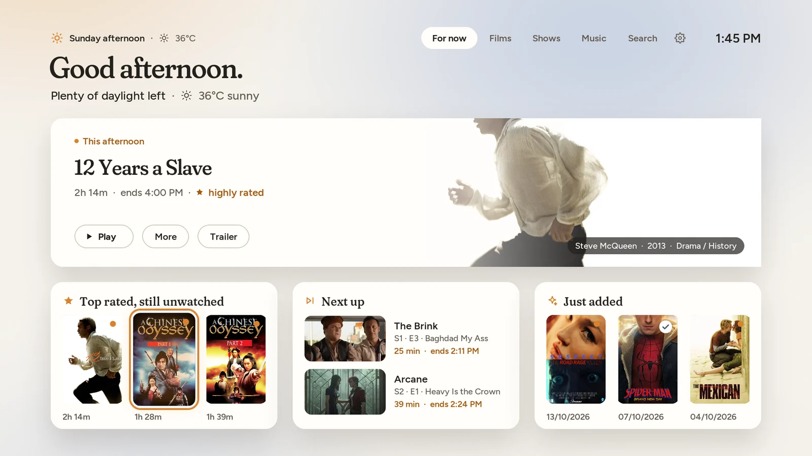
04DaylightA skin that knows what time it is -
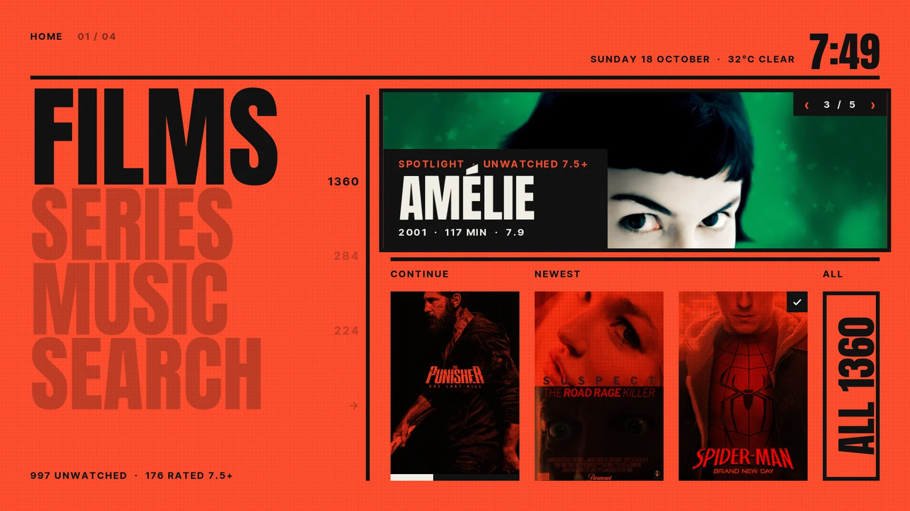
05DuotoneEvery picture printed in its section's colour -
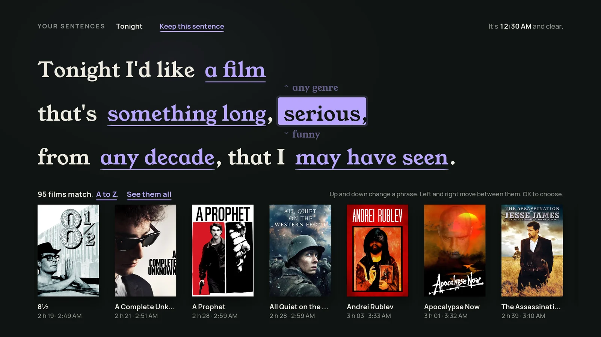
06SentenceAsk for what you want, in a sentence -
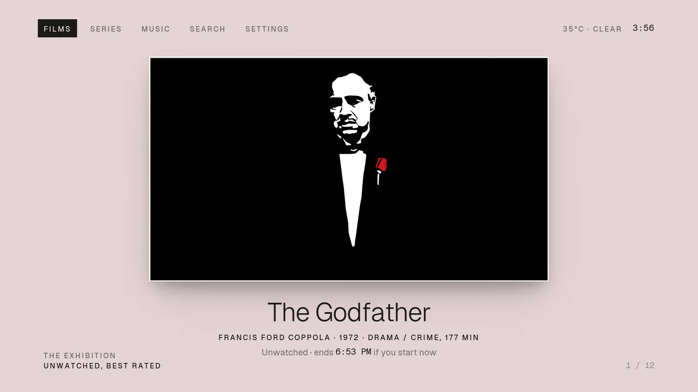
07Passe-partoutEvery film, framed -
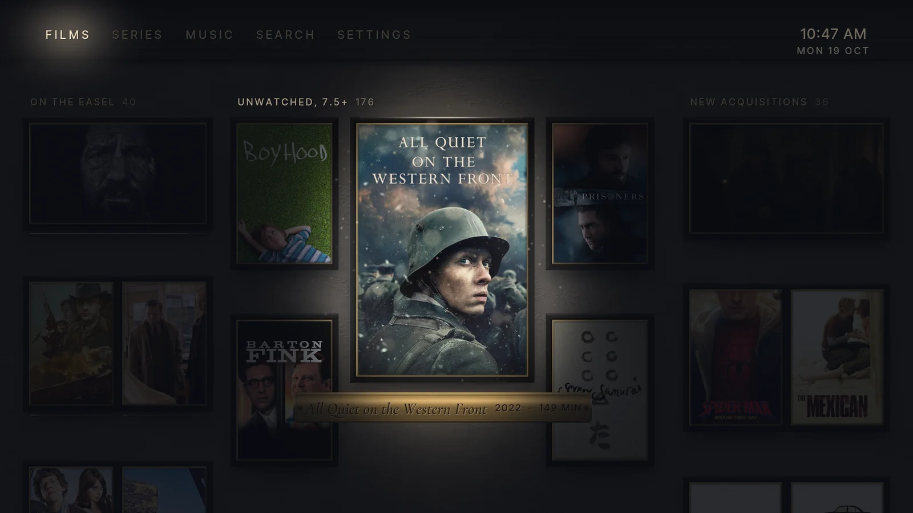
08NocturneYour library after hours, explored by torchlight -
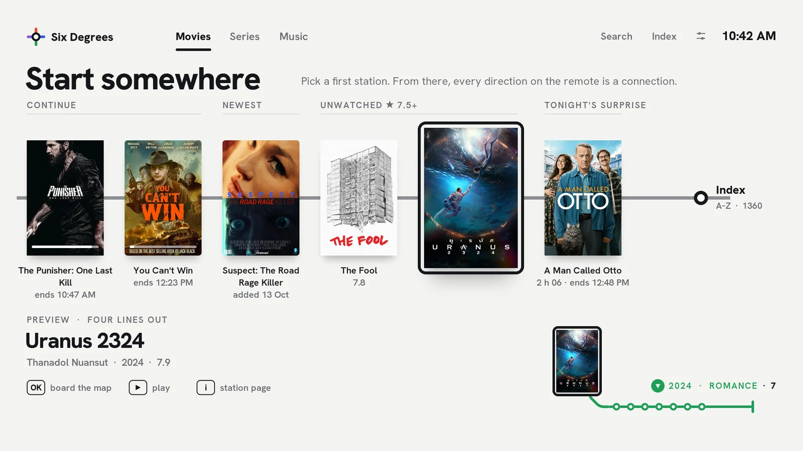
09Six DegreesEvery direction is a connection -
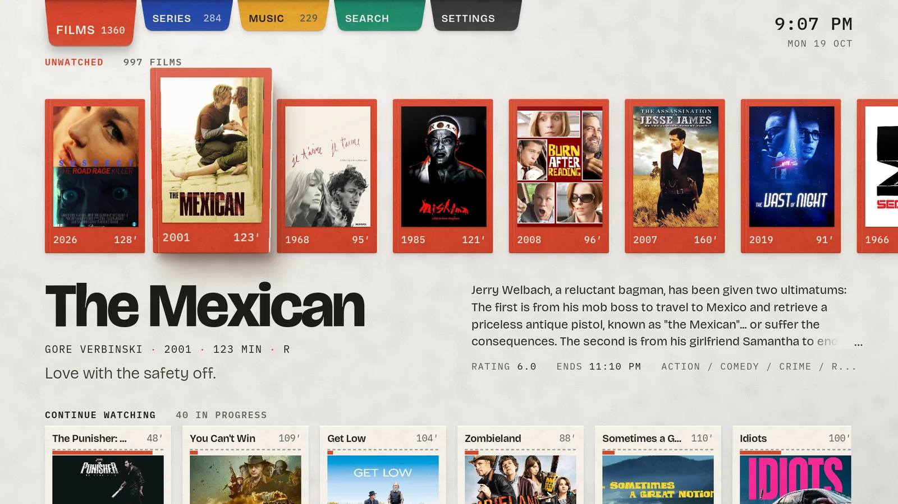
10FoldEverything unfolds -
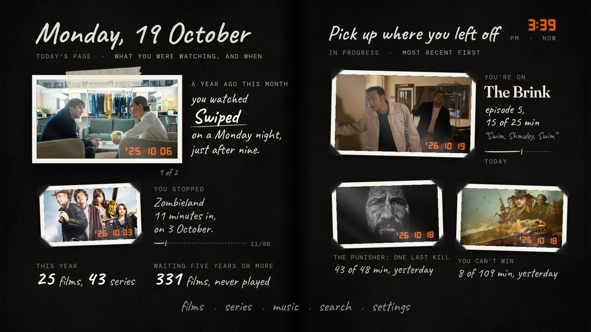
11KeepsakeThe skin that remembers
01 / 11
Majan
An editorial index for your library
The idea
Swiss print layout translated to a three-metre screen: a near-black page, big tight Hanken Grotesk headlines, JetBrains Mono captions, one-pixel hairlines and a single confident accent. The artwork is the colour and the chrome stays out of the way.
Browsing shows the poster with exactly what matters (rating, plot, director, cast) and everything else waits on the info page. It was built to feel instant on the Shield, with every helper add-on optional.
What makes it different
- The menu reveals the content. Resting on Home, Movies, TV shows or Music swaps in a spotlight or a hub of stacked rows, debounced so sweeping the menu never fires a library query.
- A browsable spotlight of unwatched films rated 7.5+, captioned like a figure in a book: Fig. 01: random pick from 176 unwatched.
- Purpose-built views: Poster Showcase, Big Poster, a TV Wall with a Next up strip, an Albums grid and Big Album.
- A real Next up for TV from Embuary Helper when it is installed, falling back to shows in progress.
- Careful playback details: a black curtain hides the refresh-rate switch, the OSD hides itself when idle, and the subtitle-offset bar sits at the top so it never covers the line you are syncing.
02 / 11
Void
One thing at a time
The idea
The quietest possible media centre. The screen shows one item, set in large Instrument Serif on true OLED black, and nothing else.
The longer you rest on it, the more it tells you: first the meta line, then the plot, and then the artwork rises behind the text like a lamp being turned up. Move, and it goes dark and quiet again.
What makes it different
- Dwell layers. Information arrives in timed layers while you rest and retracts the moment you press a key.
- Ambient mode. After a few seconds the fanart fades in behind the title with a slow Ken Burns drift.
- No art while moving. Artwork loads only after a rest, so racing through 1,360 films never decodes a single fanart.
- Seven shelves on Home: Left/Right changes shelf, Up/Down flips through it like a rolodex seen edge-on.
- The library as a rotary text index with an A to Z column and a small floating poster.
03 / 11
Orbit
Browse on a dial
The idea
Everything moves on circles. Posters glide along a large arc into the lens, data is drawn as instrument rings, and playback is a circular scrubber.
It feels like a watch face or a piece of precision audio gear: deep blue-black, fine luminous lines, engraved numerals, and one signal amber for the live value on every ring.
What makes it different
- The arc. Turning the dial slides, zooms and rotates posters along a curve into the lens, brightness falling off with distance.
- Home is a dial: Movies, TV, Music, Search and Settings sit around a ring, and each station's content arcs out beside it.
- Instrument rings: rating as an arc meter, runtime as a clock sector showing when the film would end tonight, progress as a ring.
- A circular OSD: the scrubber is a ring, with chapter, time remaining and progress read off beside it.
- Arcs everywhere: records on the music arc, the cast on an arc on info pages, search results as dials.
04 / 11
Daylight
A skin that knows what time it is
The idea
A calm, rounded skin whose palette and suggestions follow the day: pale morning, bright afternoon, amber evening, and a dim deep-blue night that is easy on the eyes in a dark room.
Home speaks in context (“Good evening. 3 h 55 min until midnight”) and offers rows built for right now, while the film in focus lends its own colour to the page.
What makes it different
- Four moods that change by themselves with the clock: morning, afternoon, evening and night.
- “For now” Home: a hero with up to five picks and contextual rows such as Fits before midnight, More under 100 minutes and One more episode.
- Weather-aware: the greeting carries the forecast, and a rainy day suggests something long.
- A bedtime-aware OSD (“ends 12:47 AM · 47 min past midnight”) with a bedtime tick on the progress track and a Sleep after this button.
- Your bedtime, your mood: set a bedtime and the rows and OSD count toward it; let the mood follow the clock or pin it to morning, afternoon, evening or night.
05 / 11
Duotone
Every picture printed in its section's colour
The idea
A loud, graphic poster-design skin. Every section owns one colour (Films vermilion, Series cobalt, Music acid, Search and Settings paper) and every picture in that section is a one-colour print on a halftone field.
The focused item alone bursts back into full colour. Huge condensed type and big numerals do the rest: it looks like a gig poster, not a streaming app.
What makes it different
- Sections you can feel: Films, Series and Music each own one colour, so the whole screen tells you where you are at a glance.
- Monotone prints with a halftone overlay; focus is a burst of full colour on a monochrome wall.
- Home as a stack of section names, with a spotlight you flip through with Left/Right.
- A dense poster wall and an info page laid out like a poster, with a series “Next ep” stat from TMDb Helper.
06 / 11
Sentence
Ask for what you want, in a sentence
The idea
Home is a sentence you finish with the remote: “Tonight I'd like a film that's something long, serious, from any decade, that I may have seen.” Each phrase is a spinner, and the matching films below update as you change it.
Filtering becomes conversation, and the whole skin talks the same way, from the info page to the OSD. Young Serif and Manrope on ink green-black, with one lilac highlighter.
What makes it different
- Spinner phrases. Left/Right moves between phrases, Up/Down cycles each one; results reload after a short rest.
- Keep this sentence: save a favourite sentence and bring it back later.
- Captions that explain themselves: “2 h 21 · finish 5:47 PM”.
- The library header is an editable sentence: “All films by year, newest first, showing only the unseen, as a grid.”
- Info as a paragraph, with the actions as phrases: “You can play it, watch the trailer, see who's in it or find more like this.”
- The OSD as a sentence: “You're 35 minutes into The Prestige. It would end at 1:43 AM.”
- Continue [a show]: the show name is itself a spinner over everything you're part-way through.
07 / 11
Passe-partout
Every film, framed
The idea
Every artwork hangs like a gallery print in a bevel-cut mat, with a museum caption beneath in fine Geist. The page is paper, and the paper's colour comes from the artwork in focus.
The Godfather sits on blush, The Punisher on steel, and as you browse the paper drifts to the next film's tone. Light, airy and quiet: no outlines and no accent colour.
What makes it different
- Art-coloured paper. TMDb Helper reads the focused film's colour and the skin normalises it to a pale paper tone.
- The exhibition on Home (Left/Right), with “the rest of the room” below: continue watching and curated rows.
- The hang, the salon hang and a list for libraries; series hang with Next up and seasons.
- The wall label info page, in a museum voice: “Acquired 15/08/2026 · unwatched · ends 6:14 PM”.
- Music as square prints, and Now playing hangs the album on the wall.
08 / 11
Nocturne
Your library after hours, explored by torchlight
The idea
The museum has closed for the night and you walk the galleries with a torch. Every poster, still and cover hangs unlit on a dark plaster wall; a warm pool of light glides with your focus, and brass plaques appear where it lands.
There are no focus frames and no accent colour, only illumination. Rest for a while and the torch starts to wander the wall on its own.
What makes it different
- The gliding torch. The pool of light travels from frame to frame instead of jumping, lighting neighbours partly as it passes.
- Brass plaques with title, year and runtime exist only where the light is.
- The Grand Gallery: Home is a salon hang of large and small frames, with the section words carved into the cornice.
- Wandering light. After 20 seconds idle the torch drifts across the wall and lingers on films you haven't seen.
- Corridors for libraries, a listening room under a pendant lamp for music, and a spotlight info page with a brass rail of actions.
09 / 11
Six Degrees
Every direction is a connection
The idea
Your library as a transit map on crisp white. The film in focus is a station, and each direction of the d-pad is a line out of it: Up rides its director, Right its lead actor, Down the films of the same year and genre, Left the second star.
OK makes a station the new centre, and the journey stays drawn along the top, so Back walks you home station by station. You rediscover your own library through rabbit holes a grid would never show you.
What makes it different
- D-pad connections: four live lines from every film: Up for the director, Right for the lead actor, Down for the same year and genre, Left for the second star.
- Re-centre and retrace: OK boards a station, the route bar records the trip, Back walks it in reverse.
- Start somewhere: Home offers starting stations (continue, newest, unwatched 7.5+, tonight's surprise) with a live preview of their lines.
- The station page: poster, facts and the four lines as stubs with counts, plus Board this line.
- Series and music maps too: network, lead, year and genre for shows; artist, year, genre and “featured on” for albums.
- A transit-line OSD that tells you when you “arrive”, plus a plain Index for when you just want a film.
10 / 11
Fold
Everything unfolds
The idea
Coloured card on a light table, made like paper engineering. Closed cards lift and tilt toward you, then swing open on real hinges into a three-panel spread; a season pulls out like a concertina and albums open as gatefold sleeves.
Nothing slides or fades: it unfolds, in perspective, with the light moving across each panel as it turns. Bricolage Grotesque and IBM Plex Mono on cream.
What makes it different
- Hinged 3D spreads. OK swings the cover open in two phases with perspective while the flap rises; Back folds it closed and returns it to its slot.
- The concertina: a season zig-zags out into a strip of episode panels.
- The gatefold: albums open to their tracklist with the disc sliding half out.
- Now playing is an open gatefold, and Back pressed mid-fold reverses the opening, so a fold never strands you.
- Paper everywhere: the OSD strip folds up from the bottom edge and dialogs open from their crease.
- Reduce motion turns every fold into a short fade for anyone who prefers it still.
11 / 11
Keepsake
The skin that remembers
The idea
Every skin treats your library as stock on a shelf; Keepsake treats it as your life with films. It is a black-paged photo album where each film you've watched is a print with photo corners and the date stamped in the corner in orange camera digits.
Notes are written beside the prints in white gel pen, and Home isn't a menu: it's today's page. “A year ago this month you watched Swiped, on a Monday night, just after nine.”
What makes it different
- Date stamps in seven-segment orange ('26 10 18) on every watched print, from Kodi's last-played date.
- Today's page: a year ago this week (or month), what you stopped part-way through, this year's count, what has been waiting five years or more.
- The diary: watched films as an album timeline, newest first, with handwritten month dividers.
- The unwatched, grouped by the year you added them: “waiting since 2016”, “seven of them arrived together, on 4 February 2019”.
- Your history with it on every info page, and the time of day you watched (“7:36 in the evening”) when Skin Variables is installed.
Install
Add them to Kodi
All eleven skins live in one Kodi repository. Add it once and Kodi installs any of the skins, with updates, from its own add-on browser.
- 1
Allow unknown sources
Settings › System › Add-ons and turn on Unknown sources. Kodi asks you to confirm.
- 2
Add the source
Settings › File manager › Add source, choose <None>, type the address below and name the source
karmamole.https://karmamole.github.io/kodi-skins/ - 3
Install the repository
Add-ons › Install from zip file › karmamole and pick
repository.karmamole.zip. - 4
Install a skin
Add-ons › Install from repository › KarmaMole's Kodi Skins › Look and feel › Skin, choose one and let Kodi switch to it. Install as many as you like and swap between them under Settings › Interface › Skin.
Prefer a file?
Download the repository zip to a USB stick or network share, then use step 3 to install it from there.
Requirements
- Kodi 21 Omega. Earlier versions are not supported.
- Works on HD and 4K screens: Kodi scales the layout to the display and draws text at full resolution. Tested on an NVIDIA Shield TV with its remote.
- Optional add-ons enrich some features: TMDb Helper (art colours, blurred backgrounds, series stats), Skin Variables (Keepsake's time of day) and Embuary Helper (Next up). Without them the skins fall back gracefully.
Licence: GPL-2.0-or-later. Bundled fonts are under the SIL Open Font License.